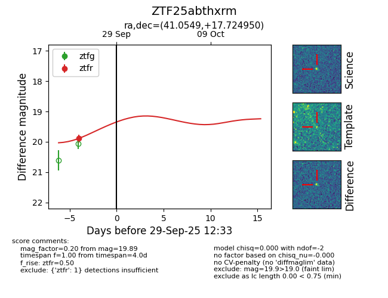
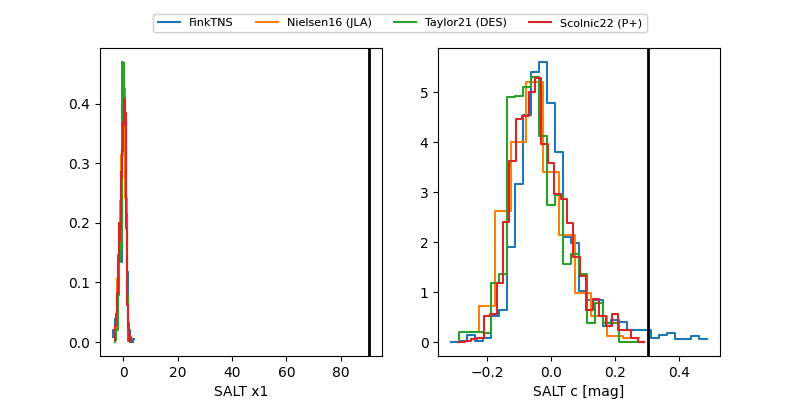

FINK: ZTF25abthxrm
Lasair: ZTF25abthxrm
ALeRCE: ZTF25abthxrm
ZTF25abthxrm (ztf,fink)
equatorial (ra, dec) = (41.0549,+17.72495)
galactic (l, b) = (157.4759,-37.46842)


last ztfr=19.89
1 ztfr detections